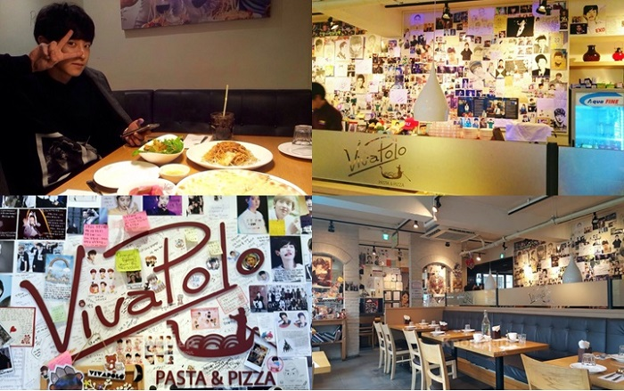

Du lịch Hàn Quốc
Welcome to Korea
Welcome to Korea
Du lịch Hàn Quốc ngoài việc tham quan, khám phá những địa danh nổi tiếng, thưởng thức ẩm thực độc đáo thì việc ghé thăm những quán cà phê Hàn Quốc do Idol làm chủ là một trải nghiệm vô cùng thú vị. Tại đó, du khách không chỉ được thưởng thức những đồ uống hảo hạng mà còn có cơ hội để gặp gỡ thần tượng của mình.
Nếu bạn là một “fan chân chính” của các nhóm nhạc Hàn Quốc, hay hâm mộ những diễn viên nổi tiếng trong những bộ phim Hàn Quốc đình đám thì hãy tham khảo và lưu lại ngay top 10 quán cà phê Hàn Quốc do Idol làm chủ nhé.
Là một nhà hàng Ý nổi tiếng, Viva Polo thuộc quyền sở hữu và dưới sự điều hành của mẫu thân ngôi sao nổi tiếng K-EX EXO’s Chanyeol. Cũng là nơi mà nhóm nhạc nổi tiếng EXO thường xuyên lui tới. Nhà hàng được trang trí với không gian ấm cúng, ánh đèn vàng cùng tông màu nâu của bức tường tạo cảm giác ấm áp, yên bình.

Hàng loạt những tranh ảnh, đồ lưu niệm của người hâm mộ được bày trí một cách tinh tế và siêu đáng yêu. Ghé thăm Viva Polo, một trong những quán cà phê Hàn Quốc do Idol làm chủ, bạn sẽ được tận hưởng cảm giác lạc vào xứ sở mộng mơ với hàng loạt những đồ vật xinh xắn.
Ngoài ra, thực đơn tại đây khá đa dạng, có nhiều loại pizza, mỳ ống, risotto, salad Italy và một số đồ ăn Hàn Quốc cùng các loại thức uống hấp dẫn. Theo cẩm nang du lịch Hàn Quốc, bạn sẽ có cơ hội tiếp xúc, trò chuyện với thần tượng của mình. Bạn có thể xin chữ kí, chụp hình và thưởng thức những màn biểu diễn âm nhạc miễn phí và cuối tuần.
Kamong là một không quan quán cà phê sao Hàn nổi tiếng được giới trẻ yêu thích. Quán cà phê thuộc quyền sở hữu của chị gái Kai, một trong những nam ca sĩ nổi tiếng của nhóm nhạc EXO. Kamong ở đây có nghĩa là nơi tụ tập, gặp gỡ của người hâm mộ, một nơi lý tưởng để có thể tiếp xúc với thần tượng của mình. Quán cà phê Hàn Quốc do Idol làm chủ này được trang trí bằng kính tạo cảm giác thoáng mát, thoải mái. Quán được bố trí nhiều bàn ghế theo phong cách của chốn đông người. Tuy lượng khách lúc nào cũng rất đông, nhưng tại đây sẽ luôn đảm bảo cho bạn được những vị trí ưng ý nhất. Hơn nữa, menu của Kamong phổ biến nhất là kem bánh quế, các loại nước trái cây tươi. Đặc biệt, trên những chiếc cốc, khăn, đạo cụ nhỏ đều là những bản sao, tranh ảnh, thông điệp do chính tay Kai viết lên. Đây chắc chắn sẽ là nơi lý tưởng cho du khách với nhiều kỉ niệm đáng nhớ trong chuyến du lịch Hàn Quốc đấy.
Quán cà phê Hàn Quốc do Idol làm chủ này nằm ở khu vực Daehakro, thuộc quyền sở hữu của mẹ ngôi sao Seungri trong nhóm nhạc Big Bang nổi tiếng. Đây là nơi phổ biến đối với những người hâm mộ nam ca sĩ Seungri, không chỉ là ở Hàn Quốc mà ngay cả giới trẻ, người hâm mộ trên toàn thế giới.
Đến với AND here Café, bạn hoàn toàn bị chinh phục bởi những vật dụng nhỏ sinh, thú nhồi bông, những chiếc cốc có hình chữ ký của thành viên nhóm nhạc Big Bang. Không gian rộng rãi với danh sách menu phong phú, những loại nước ép trái cây, cà phê, rượu sâm banh, trà ngọt, bánh ngọt,… Dù là tiệm cà phê của sao Hàn nhưng mức giá lại không quá đắt đỏ.
Kona Beans là một trong những quán cà phê theo phong cách Hawaii, thuộc quyền quàn lý của Lee Teuk, thành viên trong nhóm nhạc Super Junio. Quán cà phê Hàn Quốc do Idol làm chủ này là thành quả của sự hợp tác của mẹ Lee Teuk, Sungmin và Kyuhyun.
Nơi đây được trang trí bắt mắt, không gian thoáng đãng với thực đơn hấp dẫn. Quán chuyên phục vụ những loại cà phe Kona, nước ép trái cây, các loại bánh ngọt hảo hạng. Ngoài ra, bạn sẽ được vui chơi, thư giãn, tiếp xúc với nhiều người nổi tiếng.
Quán cà phê do Yeung, thành viên của Super Junio quản lý cực kỳ “hot” đối với giới trẻ. Không gian quán rộng rãi nhưng luôn có cảm giác ấm cúng do sự trang trí độc đáo và hài hòa của các gam màu.
Mouse Rabbit Coffee chuyên về các món ngọt như bánh kem, bánh Mouse được chế biến cầu kì với hương vị ấm áp ngọt ngào. Thực đơn của quán khá đa dạng, thuận lợi cho việc lựa chọn của du khách. Quả thật, không hổ danh top những quán cà phê Hàn Quốc do Idol làm chủ nổi tiếng, đình đám đối với giới trẻ.
GỢI Ý TOUR DU LỊCH HÀN QUỐC |
|---|
>> Hà Nội – Hàn Quốc: Busan – Seoul 6 Ngày Bay Vietnam Airlines chỉ với 15.490.000 đồng
|
Grill5taco là nhà hàng chuyên ẩm thực Mexico, nằm trong phố Cheongdamdong và thuộc quyền sở hữu của Super Junio Donghae. Quán cà phê nổi tiếng này được trang trí theo phong cách rất độc đáo, mới lạ. Cùng với đó là những món ăn “không lẫn vào đâu được” khiến du khách không khỏi tò mà và thích thú.
Đến với Grill5taco, bạn sẽ bị chinh phục bởi ẩm thực Mexico như tacos, burritos, quesadilla,… Với sự hết hợp hài hòa giữa sắc màu và sự hòa quyện giữa các vị chua, cay, mặn, ngọt cùng với cách bày biện mang tính nghệ sĩ khiến những món ăn trở nên đặc biệt.
Đây là quán cà ohee 2 tầng vô cùng nổi tiếng của Kim Jaejoong- nam ca sĩ, diễn viên nổi tiếng tại xứ sở Kim Chi. Quán cà phê tọa lạc tại trung tâm mua sắm Myeongdong. Điều khiến người hâm mộ vô cùng yêu thích ghé thăm nơi đây chính là hóa đơn tính tiền có chữ ký của Jaejoong, được ép plastic rất đẹp.
Tại đây, âm nhạc chính của quán cà phê là của Jaejoong, không gian lí tưởng để trang trí hình ảnh thân tượng, đồ lưu niệm,… Đây chính là thiên đường giành cho những fan hâm mộ Jaejoong và cả những người hâm mộ trên thế giới khi du lịch Hàn Quốc. Với top 7 quán cà phê nổi tiếng do Idol Hàn Quốc trực tiếp quản lí, hy vọng rằng những thông tin mà chúng tôi cung cấp sẽ có ích và thêm phần thú vị trong chuyến du lịch Hàn Quốc của các bạn. Và đừng quên, luôn theo dõi tin tức du lịch Hàn Quốc để có thể cập nhật những trải nghiệm thú vị nhất nhé.
Top 20 điểm tham quan nhất định phải ghé thăm trong hành trình chinh phục Seoul

Điện thoại: 0903357616
Email: thaontps24690@fpt.edu.vn